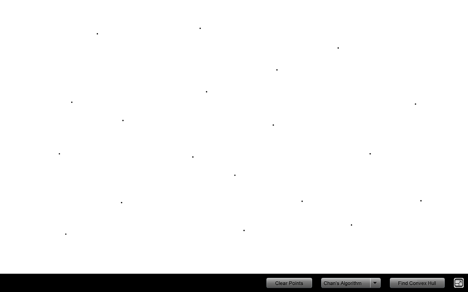
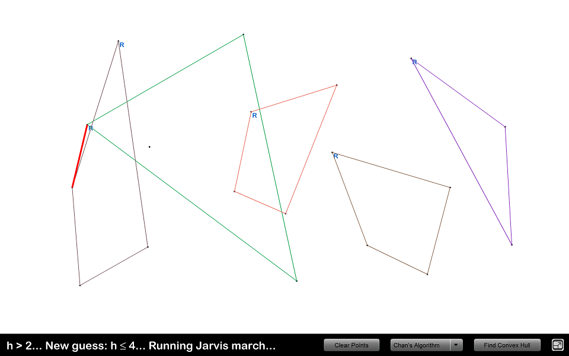
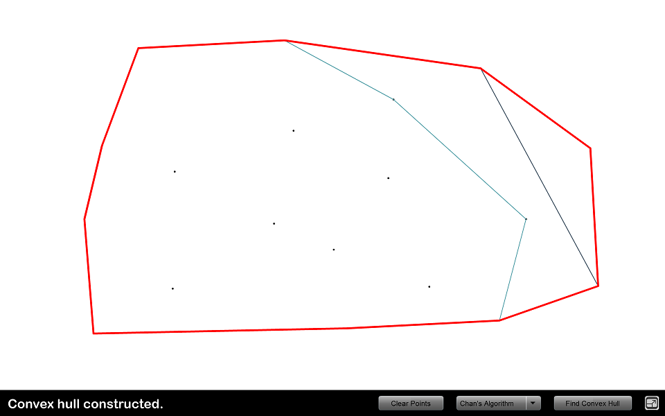

Convex Hullflash application by Christopher SalvaraniThe Flash ApplicationThe SourceHere is the Flash source. You need to open it in Adobe Flash CS3 or later, as it uses ActionScript 3. ReadmeA readme with details about the application. TODO List
Sample ExecutionInputting points:Mini-hulls constructed, starting Jarvis march:Convex hull constructed: |